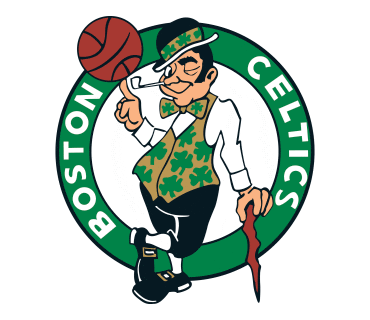
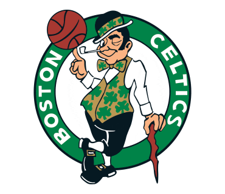
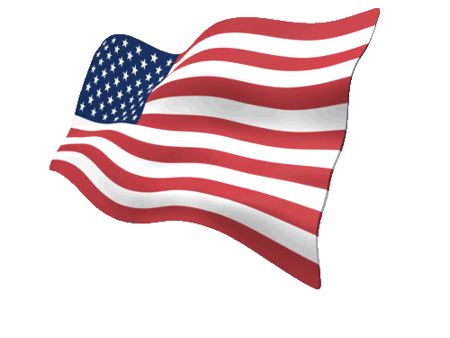

Hello! My name is Nathan Henok and I am 13 years old. I love sports but most of all, love soccer. I also love food. Some of my favorite foods are Pizza, Chicken wings, and burgers. My favorite soccer player is Cole Palmer. 🥶🥶🥶I'm in Middle school right now and the school I go to is Argyle Middle school. At school, I value my grades a lot and usally get all A's. My favorite color is Blue. Other sports I enjoy playing are Basketball, Football, and Kickball.

.gif)
.gif)
.gif)
.gif) 

.gif)
.gif)
.gif)
.gif)
I study a lot. Some websites I go on are Khan Academy, IXL, Epic and more!My dream is to be a AI agent developer when I grow up. Some things I enjoy doing my free time is swimming, playing and talking about sports, and relaxing. In my old elementary school, I was one of the most popular people in the school. Sometimes, my dad calls me "Nati boy". I'm pretty good at soccer. I can play many different positions but I play best at CDM or holding midfield. I also play video games and my favorite is EA FC 26. I also enjoy playing Minecraft and Madden.

.gif)
As said a little bit before about school. I am an all A student and in this new school and I think I got
the hang of it. My new school, Argyle needed some getting used to. Lockers, fights,
new teachers and classmates was a lot of getting used to. Also my former math teacher, Ms El-Haggan
got forced to leave Argyle. A lot of change but my grade has not dropped in any class because
of it. I also have many friends like Jeramiah, Lincoln, Tyler and others. This school year started
and in eighth grade I need keep my focus to continue getting good grades because i'm getting ready for high school
and to get into the magnet program. I also need to keep my grades up to get into a good college. I want to go to the
University of Maryland College Park because it is close to home and is a balanced school. I also want to go to Stanford
or Harvard because they have good computer science programs and will be great for my resume.


I have parents that are from Ethiopia. There were 2 reasons they left. The 1st was because there was more opportunity in the US. The other reason was because they didn't like the leader Abiy Ahmed. I also have one brother named Noah. My mom's favorite athlete is Kobe Bryant. My dad's favorite athlete is Haile Gebrselassie, an Ethiopian runner. My brother's favorite athlete is Lionel Messi. Some memories we all have was when we went to 2 soccer games. They were preseason and the games were Brentfond vs Aston Villa and Chelsea vs Fulham. We had so much fun. The score for the first game was 3-3 and the 2nd game was 2-0 Chelsea. Another memory I have is when we went to Virginia Beach. It was a vacation. I loved It! We went inside a sweet hotel,they served us breakfast in a different part of the hotel. There was a beautiful beach that had very nice waves. While the wave was coming at us we would jump over it. My cousins were there as well so we all enjoyed it together. My mom prefered to watch us do it. It was awesome!

This is our family photo. Cool right. I thought so. We always stick together even when one is having a bad day
(I looking at you Noah) The tall kid who is standing is yours truly. The smaller child is Noah.
The ones sitting down are my Mom and my Dad. My dad works at DOES and my mom works at Sunrise living center.
If you would like to know more about my family, you can click these webistes made by my brother and dad below.
Ok, enough about my family. Lets talk more about me. Here are some of the projects I have made. You can click on the links to go to the projects.
Created by Nathan Henok